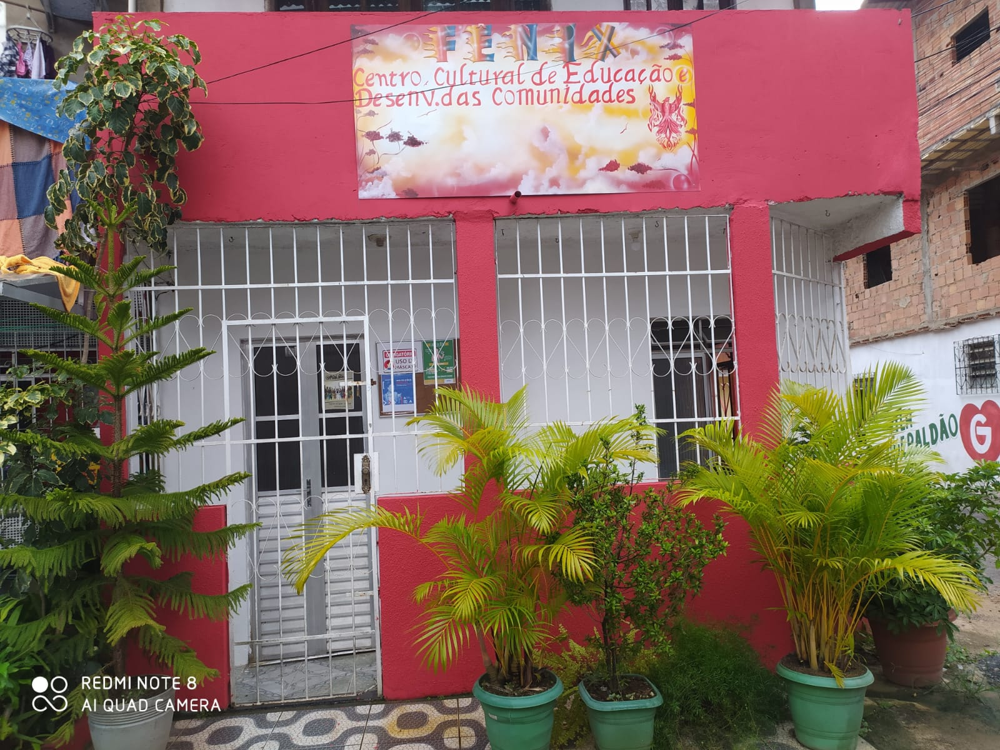

O Instituto
Desde 1997 a Organização Social FÊNIX - Centro Cultural de Educação e Desenvolvimento tem se estabelecido e desenvolvido trabalhos em diversas Comunidades: Pero Vaz, local onde foi criada com o nome de ASSOCIAÇÃO BENEFICENTE PRIMEIRO DE MAIO.
Após essa experiência, sob a denominação de PROJETO SOCIOCULTURAL FÊNIX, sentimos a necessidade de mudar de denominação para que pudéssemos trabalhar de maneira mais abrangente em qualquer Comunidade carente. Por conta disso, passamos por alterações em nosso Estatuto.
Em seguida, atuamos na Comunidade de São Caetano, onde desenvolvemos um grande trabalho. Em 2009, através de uma forte parceria com o ILÊ AXÉ OMO ALADÊ (Terreiro localizado em Itapuã, mais precisamente em Jardim Placaford), nos estabelecemos para abrir as nossas fronteiras e no mesmo local estamos nos estruturando e crescendo.
Apesar de estarmos sediados em Itapuã, desenvolvemos trabalhos em outras Comunidades através das parcerias formadas para que assim possamos desenvolver nossas atividades. Melhorias estão acontecendo gradativamente e o reconhecimento da Utilidade Pública Municipal da FÊNIX, assim como a qualificação como Organização Social é notado pelas comunidades, por nossos parceiros e famílias que são atendidas.
Atualmente nossa denominação está assim formalizada: Organização Social FÊNIX – Centro Cultural de Educação e Desenvolvimento das Comunidades.
Visão
Cada um de nós tem o poder de transformar vidas e juntos somos mais fortes e chegamos mais longe! Acreditamos em uma sociedade unida e ativa na transformação social: construindo pontes e sonhos por um Brasil melhor e mais justo!
Propósito
Contribuir para o desenvolvimento de vidas, ampliando acesso às oportunidades e à melhoria da qualidade de vida.
Valores
Coerência

Praticamos aquilo que pregamos
Colaboração
Escolhemos a cooperação à competição
Pensamento Ganha-Ganha
Buscamos o benefício mútuo em todas as interações humanas
Empatia
Antes de tomarmos uma decisão, buscamos entender como os outros envolvidos se sentiriam
Ética
Somos transparentes em nossas relações.
Nosso papel
Desde 1997 a Organização Social FÊNIX - Centro Cultural de Educação e Desenvolvimento tem se estabelecido e desenvolvido trabalhos em diversas Comunidades: Pero Vaz, local onde foi criada com o nome de ASSOCIAÇÃO BENEFICENTE PRIMEIRO DE MAIO.
Após essa experiência, sob a denominação de PROJETO SOCIOCULTURAL FÊNIX, sentimos a necessidade de mudar de denominação para que pudéssemos trabalhar de maneira mais abrangente em qualquer Comunidade carente. Por conta disso, passamos por alterações em nosso Estatuto.
Em seguida, atuamos na Comunidade de São Caetano, onde desenvolvemos um grande trabalho. Em 2009, através de uma forte parceria com o ILÊ AXÉ OMO ALADÊ (Terreiro localizado em Itapuã, mais precisamente em Jardim Placaford), nos estabelecemos para abrir as nossas fronteiras e no mesmo local estamos nos estruturando e crescendo.
Apesar de estarmos sediados em Itapuã, desenvolvemos trabalhos em outras Comunidades através das parcerias formadas para que assim possamos desenvolver nossas atividades. Melhorias estão acontecendo gradativamente e o reconhecimento da Utilidade Pública Municipal da FÊNIX, assim como a qualificação como Organização Social é notado pelas comunidades, por nossos parceiros e famílias que são atendidas.
Atualmente nossa denominação está assim formalizada: Organização Social FÊNIX – Centro Cultural de Educação e Desenvolvimento das Comunidades.
Causas

Direito das crianças, dos adolescentes e das famílias

Direito do público LGBTQIA+

Cursos profissionalizantes para jovens e adolescentes